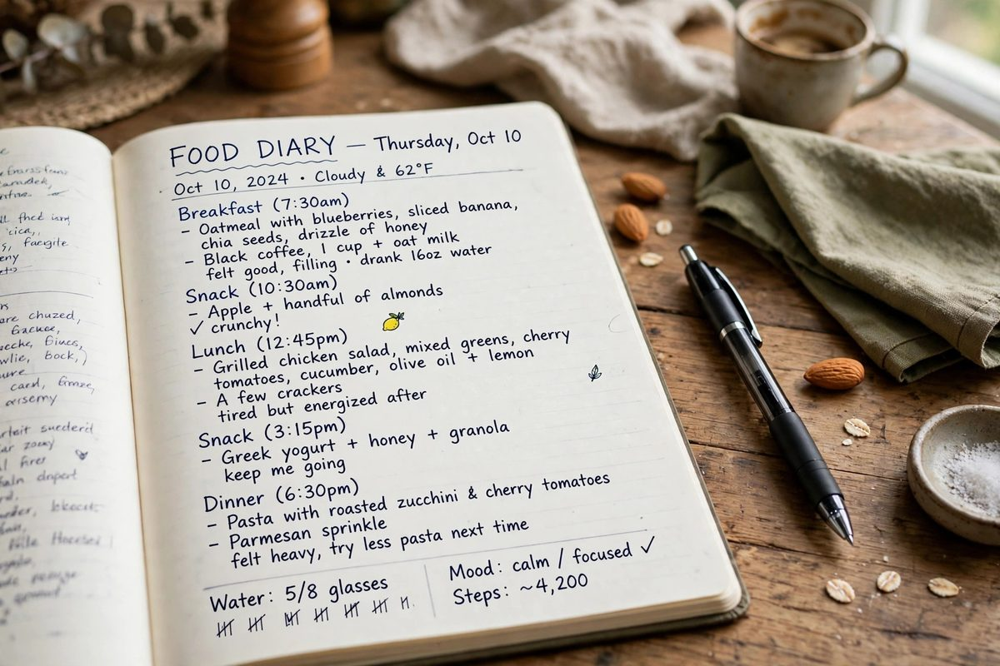
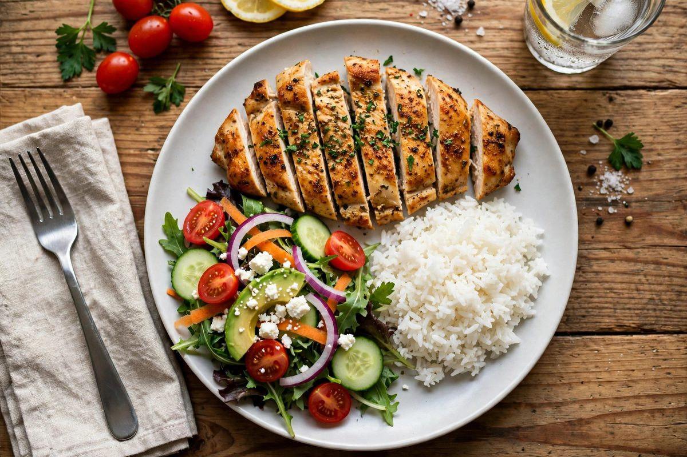
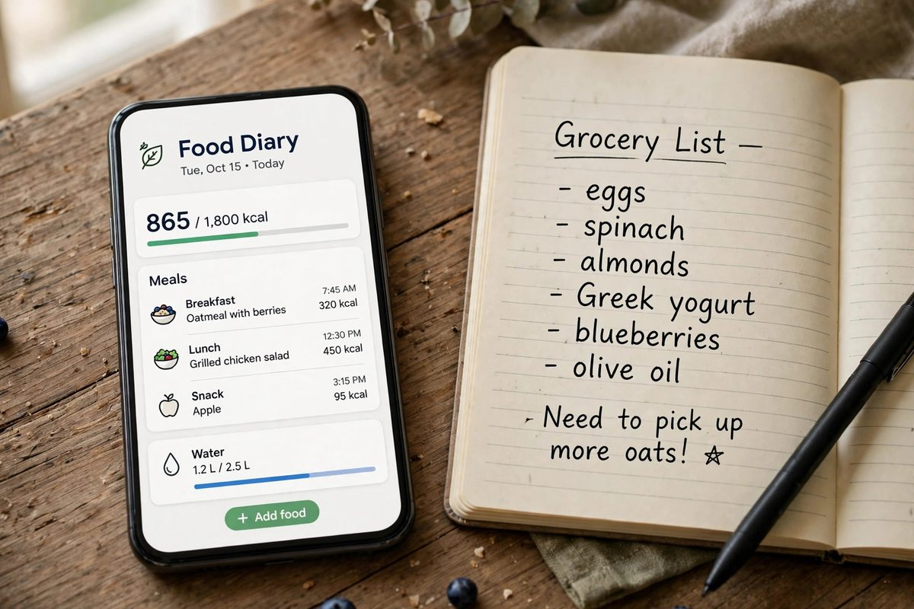
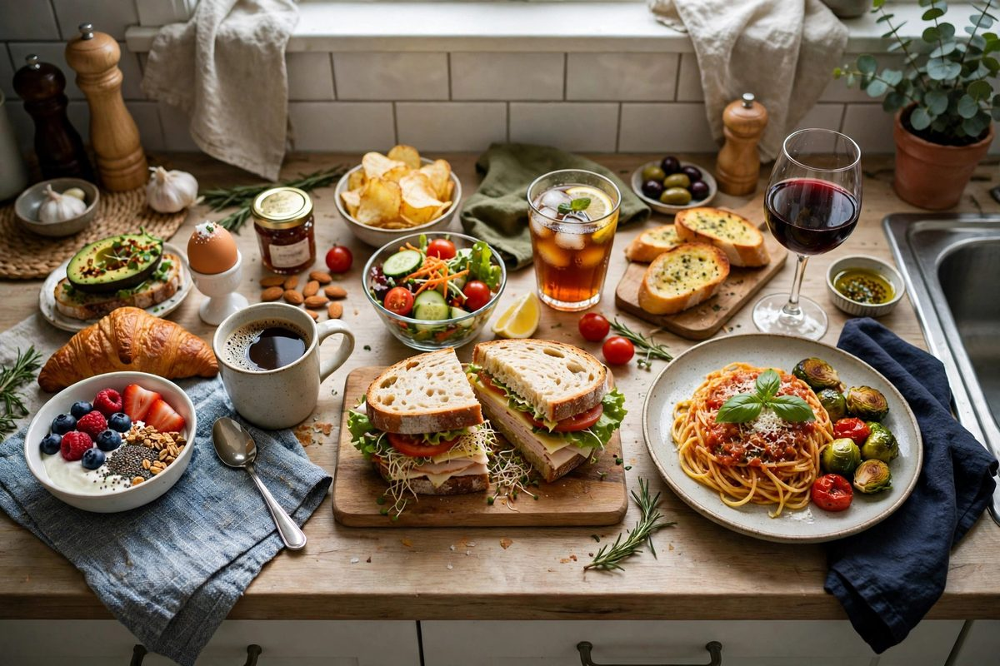

How It Works
Our calorie calculator uses the Mifflin-St Jeor equation to estimate your resting metabolism, then multiplies it by your activity level to give your total daily needs. Enter your details in the main calculator and you will get your daily calories, your BMR, and targets for losing or gaining about 0.5 kg a week.
If you want the detail, our guide to what BMR is explains the resting number, and TDEE explained covers the total. The activity multipliers guide helps you pick the right level — the step most people get wrong — and how to use the calculator walks through the whole process.
For weight change, see how many calories to lose weight and how many to gain weight, plus the weight loss and gain planner for a personal timeline. And if progress stalls, breaking a plateau explains why it happens and how to restart it.
All Calculators
Estimate your daily calorie needs from your age, sex, weight, height and activity level.BMR Calculator
Calculate your basal metabolic rate — the calories your body burns at complete rest.Calories Burned Calculator
Estimate calories burned by walking, running, cycling, swimming and more.Weight Loss & Gain Planner
Plan a daily calorie target and a realistic timeline to reach your target weight.
Guides

How to Use a Calorie Calculator
A step-by-step guide to getting an accurate daily calorie estimate from your age, weight, height and activity.

What Is BMR? Basal Metabolic Rate Explained
What basal metabolic rate means, how it is calculated, and why it is the foundation of every calorie estimate.
TDEE Explained: Total Daily Energy Expenditure
What TDEE is, how the activity multipliers work, and how to use your TDEE for weight loss, gain or maintenance.

How Many Calories to Lose Weight
How to set a calorie target for weight loss, how fast to expect results, and how to adjust when progress stalls.

How Many Calories to Gain Weight
How to set a calorie surplus for healthy weight gain, what to eat, and how to make sure the gain is mostly muscle.
Activity Multipliers Explained
What the 1.2 to 1.9 activity factors mean, how to pick the right one, and the mistakes that inflate your estimate.

Calorie Deficit Mistakes to Avoid
The most common errors that stall weight loss, from hidden calories to shrinking deficits, and how to fix each one.

Counting Calories for Beginners
A simple, low-stress way to start tracking what you eat, without weighing everything or giving up after a week.

Calories Burned Walking
How many calories walking really burns, how pace, weight and hills change it, and how to use walking for weight loss.
Calories Burned Running
How many calories running burns at different paces and weights, and how running fits into a weight-loss plan.

Protein, Carbs and Fat: Finding Your Split
How to divide your daily calories between protein, carbohydrate and fat, and how the split changes with your goal.

Calorie Needs by Age
How daily calorie needs change from your 20s to your 70s, and how to adjust your eating as you age.

Calorie Needs for Men
How many calories men typically need, what drives the number, and how activity and muscle change it.
Calorie Needs for Women
How many calories women typically need, how the number changes through life, and how to find your own figure.

Breaking a Weight Loss Plateau
Why weight loss stalls, how to tell a real plateau from normal fluctuation, and the steps that restart progress.

Eating Out: A Calorie Guide
How to enjoy restaurants and takeaways without wrecking your calorie target, and the choices that save the most calories.

Calorie Tracking Apps vs Manual Tracking
Whether to track with an app or by hand, the strengths of each, and how to choose the method you will actually keep using.

Maintenance Calories: A Guide
How to find the calories that keep your weight steady, and how to eat at maintenance without counting forever.

A Worked Example: A 2,500-Calorie Day
A full day of meals adding up to about 2,500 calories, with the numbers for each meal and how to adapt it.
Metabolism Myths Debunked
The most common wrong ideas about metabolism, from starvation mode to miracle foods, and what the evidence actually says.
Frequently Asked Questions
How many calories should I eat a day?
It depends on your age, sex, weight, height and activity. A moderately active adult typically needs roughly 2,000 to 2,600 calories a day. Use the calculator for a personal estimate.
What is BMR?
Basal metabolic rate: the calories your body burns at complete rest. It is roughly 60 to 75 percent of your daily total.
What is TDEE?
Total daily energy expenditure: all the calories you burn in a day, including resting metabolism, movement, exercise and digestion.
How many calories do I need to lose weight?
About 500 below your maintenance calories, for roughly 0.5 kg of loss per week.
Is the calculator accurate?
It is an estimate, usually within about 10 percent. Use it as a starting point and adjust from your results over two to three weeks.
Is my data stored anywhere?
No. The calculation runs in your browser, and nothing you enter is sent or stored.